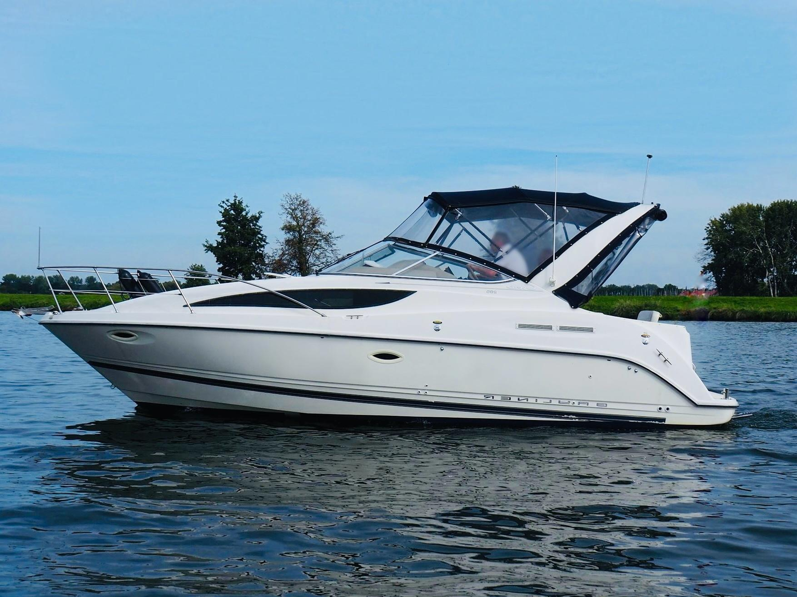

Bayliner 2855 Ciera Sunbridge Multi-Generation Sunbridge
Production years not confirmed
The Bayliner 2855 Ciera Sunbridge is a single-sterndrive family express cruiser with a mid-cabin layout, convertible dinette, galley and enclosed head. The 2855 designation spans several materially different generations, so dimensions, hull details and interior arrangement should be verified against the production year rather than treated as one unchanged model.

- Length
- 28.08 ft
- Beam
- 9.5 ft
- Draft
- 3.25 ft
- Hull behaviour
- Planing
- Fuel
- Gasoline
- Propulsion
- Sterndrive
- Engine configuration
- Single Inboard
- Boat family
- Cruiser
- Construction
- Fiberglass
Best for
- Family weekend cruising
- Buyers seeking maximum accommodation for purchase price
- Owners comfortable maintaining a gasoline sterndrive
Trade-offs
- The 2855 name covers multiple hull and interior generations
- Limited side-deck access on later Sunbridge layouts
- Finish and equipment are oriented toward value rather than premium construction
- Sterndrive service and transom condition are central ownership considerations
Known concerns
- No model-specific concern has been promoted to B-Scout’s evidence threshold. This does not mean the model has no age-, condition- or hull-specific risks.
Inspection focus
- Sterndrive, transom assembly and engine cooling system
- Deck and transom moisture
- Fuel system and original wiring
- Cabin leaks and interior moisture
Continue researching
Related boat models
27.75 ft · Planing
31 ft · Planing
31.5 ft · Planing
32.67 ft · Semi-Displacement
23.42 ft · Planing
32.92 ft · Planing
About this record
B-Scout preserves uncertainty: missing information remains unknown rather than being treated as a negative. Specifications and guidance describe the model record; individual boats can differ by year, equipment, refit and condition.